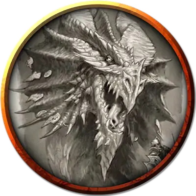

Клаут
Klauth
Громадный Дракон, хаотично-злой, именной НИП

Класс Доспеха 22 (природный доспех)
Хиты 546 (28к20 + 252)
Скорость 40 футов, летая 80 футов, лазая 40 футов
| мод | спас | ||
|---|---|---|---|
| СИЛ | 30 | +10 | +10 |
| ЛОВ | 10 | +0 | +7 |
| ТЕЛ | 29 | +9 | +16 |
| мод | спас | ||
|---|---|---|---|
| ИНТ | 18 | +4 | +4 |
| МДР | 15 | +2 | +9 |
| ХАР | 23 | +6 | +13 |
Навыки Восприятие +16, Скрытность +7
Иммунитет к урону огонь
Чувства слепое зрение 60 футов, тёмное зрение 120 футов, пассивное Восприятие 26
Языки Общий, Драконий
Опасность 25 (75000 опыта)
Бонус мастерства +8
Особенности
Легендарное сопротивление (3/день). Если Клаут проваливает спасбросок, он может вместо этого сделать спасбросок успешным.
Владение двумя волшебными палочками. Если Клаут носит две волшебные палочки, он может использовать действие для того, что использовать по одному заряду у каждой палочки, эффекты каждой срабатывают одновременно.
Особое снаряжение. Клаут носит с собой волшебную палочку огненных шаров [wand of fireballs] и волшебную палочку молний [wand of lightning bolts], на него надето кольцо сопротивления [ring of resistance] (Холод).
Действия
Мультиатака. Клаут может использовать Ужасающее присутствие. Затем он совершает три атаки: одну укусом, и две когтями.
Укус. Рукопашная атака оружием: +17 к попаданию, досягаемость 15 футов, одна цель. Попадание: Колющий урон 21 (2к10 + 10) плюс урон огнём 14 (4к6).
Коготь. Рукопашная атака оружием: +17 к попаданию, досягаемость 10 футов, одна цель. Попадание: Рубящий урон 17 (2к6 + 10).
Хвост. Рукопашная атака оружием: +17 к попаданию, досягаемость 20 футов, одна цель. Попадание: Дробящий урон 19 (2к8 + 10).
Ужасающее присутствие. Все существа на выбор Клаута, находящиеся в пределах 120 футов от него и знающие о его присутствии, должны преуспеть в спасброске Мудрости Сл 21, иначе станут испуганными на 1 минуту. Существо может повторять этот спасбросок в конце каждого своего хода, оканчивая эффект на себе при успехе. Если спасбросок существа был успешным, или эффект на нём окончился, оно получает иммунитет к Ужасающему присутствию этого дракона на следующие 24 часа.
Огненное дыхание (перезарядка 5–6). Клаут выдыхает огонь 90-футовым конусом. Все существа в этой области должны совершить спасбросок Ловкости Сл 24, получая урон огнём 91 (26к6) при провале, или половину этого урона при успехе.
Использование заклинаний. Клаут накладывает одно из следующий заклинаний, не нуждаясь в никаких материальных компонентах, и Харизма является для них базовой характеристикой Клаута (Сл спасброска от заклинания 22):
• Неограниченно: понимание языков [comprehend languages], обнаружение магии [detect magic], волшебная рука [mage hand], малая иллюзия [minor illusion], фокусы [prestidigitation]
• 2/день каждое: тьма [darkness], обнаружение мыслей [detect thoughts], град [ice storm]
• 1/день каждое: изгнание [banishment], облако смерти [cloudkill], распад [disintegrate], эфирность [etherealness], поиск пути [find the path] (накладывается за 1 действие), высшая невидимость [greater invisibility], ускорение [haste], поиск предмета [locate object], множественное внушение [mass suggestion], таинственный мираж [mirage arcane] (накладывается за 1 действие), радужные брызги [prismatic spray]
Легендарные действия
Дракон может совершить 3 легендарных действия, выбирая из представленных ниже вариантов. За один раз можно использовать только одно легендарное действие, и только в конце хода другого существа. Дракон восстанавливает использованные легендарные действия в начале своего хода.
Обнаружение. Клаут совершает проверку Мудрости (Восприятие).
Атака хвостом. Клаут совершает атаку Хвостом.
Атака крыльями (стоит 2 действия). Клаут бьёт своими крыльями. Все существа в пределах 15 футов от дракона должны преуспеть в спасброске Ловкости Сл 25, иначе получат дробящий урон 17 (2к6 + 10) и будут сбиты с ног. После этого дракон может пролететь на расстояние, не превышающее половину скорости полёта.
Описание
См. дополнительно статью: «Бестиарий: Драконы»